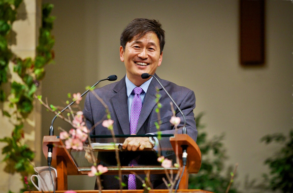

Pastor Raymond Yip
Pastor Raymond is husband to Jeanette,
and father of three children. He grew up in a family restaurant
in Southern California, later attended U.C. Davis, and then worked
high tech/computer industry in Northern California for various
startups and major corporations. He was called to ministry in 2007,
serving in various capacities (families, facilities, worship, children’s),
and with a heart for missions and church-planting. His current mission
is to be a Bay Area pastor of a multi-cultural church. He is a graduate
of the Gateway Seminary (formerly Golden Gate Baptist Theological
Seminary).

Senior Pastor Kenneth Son
Pastor Kenneth Son came to the United States
during his high school years, in Southern California. After attending
Cal Poly Pomona, he obtained his M.Div. from Fuller Theological
Seminary in 1996. After he was ordained by the Southern Baptist
Convention, he served the young adult ministry in Bethel Korean
Church in Irvine. He was also went to Japan as missionary, before
becoming the senior pastor of New Community Baptist Church in 2011.
He is husband to Kathy, and together they raise two children. He is
committed to a ministry where, “one’s life is devoted to going after
that one lost soul."